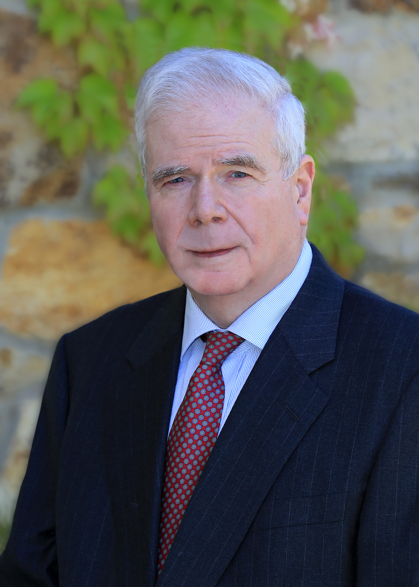

DONALD BROSNAN
Since 2017 Donald F. Brosnan has collaborated with James Elliott and Elliott & Associates, a firm engaged in employment counseling and litigation.
Mr. Brosnan graduated from the University of California at Davis, Phi Beta Kappa, in 1976, with highest honors, and ranking 3d in a class of 1600, with a B.A. major in classical Latin and Greek. In 1979 he the Yale Law School, where he was a Senior Editor of the Yale Law Journal and semi-finalist in the Moot Court brief-writing competition.
From 1979 to 1981 Don served as in-chambers law clerk to the Hon. Anthony M. Kennedy, Circuit Judge, U.S. Court of Appeals for the Ninth Circuit. He was admitted to the bar in the State of California in 1980, and in the State of Illinois in 1997.
Since then, Mr. Brosnan has practiced complex business litigation and corporate transactional law at leading law firms including Irell & Manella, Mayer Brown, and Steptoe & Johnson. His general business litigation practice has entailed successful briefing of dispositive motions in many state and federal courts on a variety of complex business litigation areas, including securities, bankruptcy, reinsurance, and international aviation litigation.
While working for a Chicago law firm from 1990 – 1997, Mr. Brosnan represented one of the nation’s premier express delivery carriers in employment law disputes with employees, successfully drafting both dispositive motions, and successful briefs in the U.S. Courts of Appeals.
Mr. Brosnan has also taught a variety of business law courses between 1984 and 1990, as an Associate Professor at Loyola Law School of Los Angeles and George Mason University Law School, and published articles on business law and other legal topics in leading law reviews.
Areas of Practice
- Discrimination
- Wrongful Termination
- Harassment (Sexual, Racial, Ethnicity, Sexual Orientation, Age, Disability etc.)
- Retaliation
- Public Policy Violations
- Constructive Discharge
Bar Admissions
ADMITTED: 1980, CALIFORNIA; 1997, ILLINOIS; 1982; U.S. DISTRICT COURT OF CALIFORNIA (CENTRAL);U.S. COURT OF APPEALS, NINTH CIRCUIT.Education
- LAW SCHOOL: YALE LAW SCHOOL (J.D., 1979).
- COLLEGE: UNIVERSITY OF CALIFORNIA, DAVIS (B.A., 1976).
Distinctions
LAW CLERK TO JUDGE ANTHONY M. KENNEDY, U.S. COURT OF APPEALS, NINTH CIRCUIT, 1979-1981; MEMBER (1977-79) AND SENIOR EDITOR (1978-1979) YALE LAW JOURNAL; PHI BETA KAPPA.Publications and Presentations
Fall 2008, U.S.C. LAW SCHOOL'S 60 TH INST. ON FED. TAX. - MAJOR TAX PLANNING FOR 2008, The Taxation of Call Spread Convertible Debt as a Problem in Modeling Income Tax Rules;Coauthor, 2002, U.S.C. LAW SCHOOL'S 54 TH INST. ON FED. TAX. - MAJOR TAX PLANNING FOR 2002, Transferring Intellectual Property;
Coauthor, 2000, N.Y.U. PROCEEDINGS OF THE 58 TH INST. ON FED. TAX., Sections 355(d) and (e): The New Regulations;
Coauthor, 2001, PLI TAX STRATEGIES FOR CORPORATE ACQUISITIONS, ETC. The New Deal Landscape and Employee Equity Compensation, Vol. 7, p. 467;
Coauthor, 2001, PLI TAX STRATEGIES FOR CORPORATE ACQUISITIONS, ETC. A CEO's and CFO's Guide To The Effect Of Taxes On Deal Terms And The Acquisition Agreement, Vol. 2, p. 687;
Coauthor, 1999, ABA Tax Section Report on §355(e) Proposed Anti-Morris Trust Regulations, reprinted in TAX NOTES TODAY, 2000 TNT 1-103 (Jan. 3, 2000);
Spin Offs Before and After the Tax Reform Act, 38 BUFFALO L. REV. 157 (1990);
Virtue Ethics in a Perfectionist Theory of Law and Justice, 11 CARDOZO L. REV. 335 (1989);
Serious But Not Critical, 60 S. Cal. L. Rev. 259 (1987);
Book Review of T. Jackson, The Logic and Limits of Bankruptcy Law, 61 TEMPLE L. REV. 885 (1988);
Credited contribution to Tax Aspects of Corporate Debt Exchanges, Recapitalizations, and Discharges (CEB Publication, Advanced Taxation Series, Fall 1982);
Note, The Supreme Court's Use of Statutory Interpretation: Morris v. Gressette, APA Nonreviewability, and the Idea of a Legislative Scheme, 87 YALE L.J. (1978)